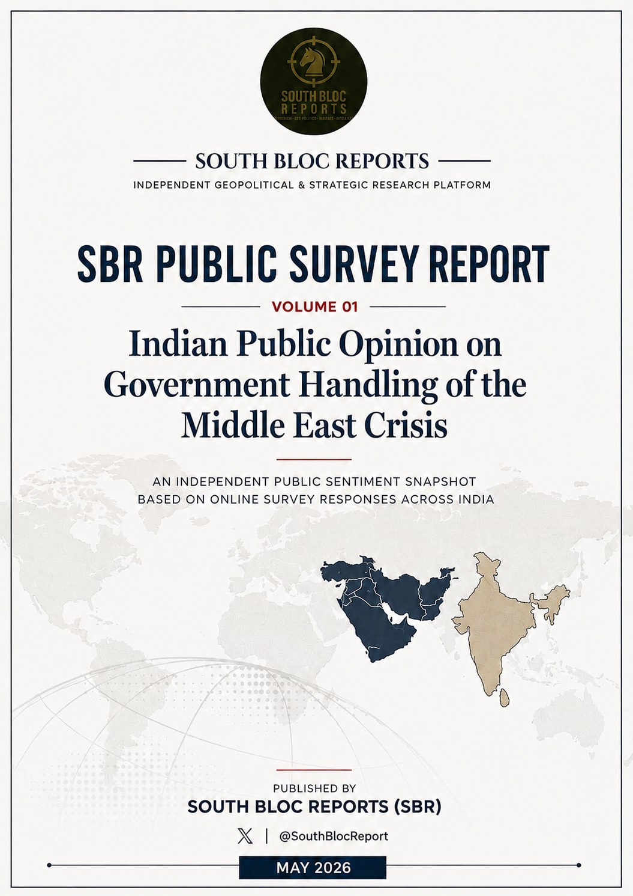
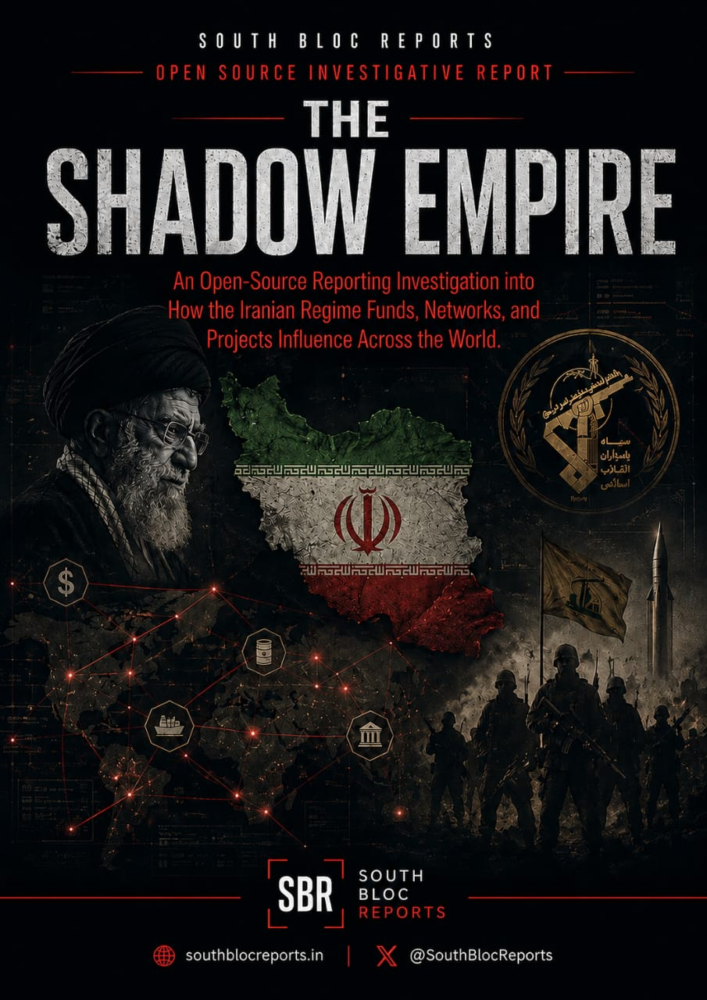
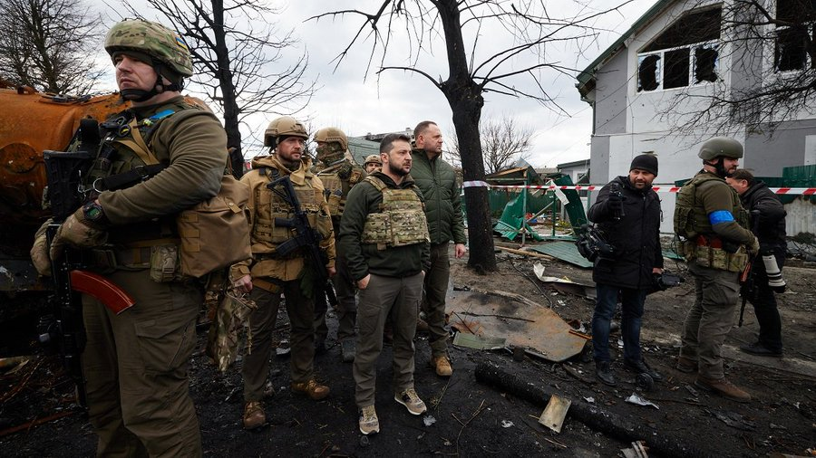

WARFARE
11 MAY 2026
UKRAINE’S DEMOGRAPHIC COLLAPSE IN NUMBERS
Ukraine’s population trajectory shows the scale of long-term demographic damage accelerated by war.
South Bloc Reports (SBR) is an independent geopolitical and strategic research platform based in India, focused on delivering structured analysis on global affairs, security developments, conflict zones, diplomacy, and emerging geopolitical risks.
Founded with the objective of making geopolitical analysis more accessible, practical, and research-driven, SBR operates at the intersection of international relations, strategic affairs, military developments, intelligence analysis, and terrorism studies. Our work focuses on understanding not just events, but the deeper political, strategic, and behavioural patterns shaping them.
At SBR, we believe geopolitics extends far beyond headlines, official statements, and diplomatic optics. Real strategic analysis requires decoding domestic politics, leadership behaviour, public sentiment, military posture, economic vulnerabilities, and long-term national objectives
Tracking extremist networks, attack vectors, radicalization pipelines, and counter-terrorism operations across active threat theaters.
Deep-dive geopolitical analysis covering shifting alliances, diplomatic pressure points, and the strategic interests driving global flashpoints.
Battlefield dispatches, tactical assessments, weapons systems analysis, and operational breakdowns from active and latent conflict zones.
Signals intelligence, covert operations exposure, agency assessments, and the classified world brought to light through verified open-source analysis.
SBR follows a country-desk research model, enabling deep and continuous monitoring of selected nations across six core pillars:
Tracking electoral dynamics, legislative developments, political leadership shifts, and governance stability across monitored states.
Analysing bilateral relations, treaty frameworks, diplomatic signalling, and bloc alignments shaping state behaviour on the world stage.
Monitoring macroeconomic indicators, strategic industry dependencies, sanctions impact, and the tools of economic statecraft.
Mapping state and independent media landscapes, disinformation campaigns, and the information environment within target countries.
Assessing protest indicators, social cohesion, demographic pressures, and civilian attitudes toward governance and conflict.
Evaluating force posture, threat actor activity, intelligence operations, and security sector dynamics across monitored nations.
Deep-dive assessments of regional power shifts, bilateral dynamics, and long-term strategic trajectories shaping global stability.
Monitoring kinetic environments, extremist networking, and the tactical evolution of non-state actors in contested theaters.
Tactical breakdowns of battlefield developments, weapons systems integration, and doctrine shifts in modern peer-to-peer conflict.
Analysis of radicalization pipelines, signal-to-noise detection in covert operations, and counter-insurgency framework evaluation.
Forecasting domestic stability through election monitoring, leadership transition mapping, and legislative risk assessment.
Facilitating closed-door briefings, specialist panels, and collaborative intelligence projects for institutional partners.
Decoding public mood and societal trends through open-source sentiment mapping and demographic attitude tracking across monitored regions.
Click any project cover to download the full PDF report. Our research is made available as open-access intelligence documents.

South Bloc Reports’ first public survey offers a snapshot of public sentiment on fuel prices, economic concerns, and citizen safety.

An Open Source Reporting Investigation into How the Iranian Regime Funds, Networks, and Projects Influence Across the World.

Ukraine’s population trajectory shows the scale of long-term demographic damage accelerated by war.
One recurring pattern in modern U.S. military history post the second world war is the constant intersection between military planning and political decision-making. The issue is not about the capability of the United States...